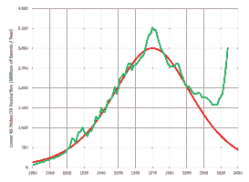
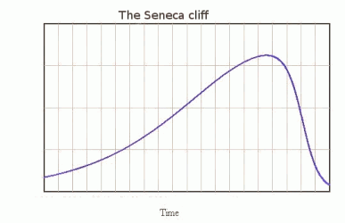

A mediados del siglo XX el geólogo King Hubbert estudió el comportamiento de los campos de petróleo y gas y observó que la producción seguía una curva en forma de campana. En 1956, extrapolando los datos al conjunto de EEUU, Hubbert predijo que la producción de petróleo en EEUU también seguiría una curva similar, cuya cima se alcanzaría a finales de los 60. Efectivamente, ese pico se alcanzó a primeros de los 70 y desde entonces, la producción de petróleo de EEUU no dejó de disminuir. Lo que no pudo predecir Hubbert es que, a partir de 2010, la técnica del fracking fuera a permitir un aumento espectacular de la producción, aunque no sepamos cuánto durará ni si habrá valido la pena ya que los costes de producción son muy altos.
En 1974, extrapolando los datos al conjunto del planeta, Hubbert predijo que la producción mundial de petróleo también seguiría una curva gaussiana, cuya cima se alcanzaría en 1995. Pero si hasta 1975 los datos de producción de petróleo se ajustaron notablemente a la curva de Hubbert, creciendo de forma exponencial, desde entonces la curva real se ha separado de la teórica, dando pie a diversas posturas con respecto a la existencia de un pico del petróleo.
En el extremo más pintoresco, los los negacionistas sostienen que el petróleo no se agotará nunca porque se produce de forma natural en la Naturaleza. Por desgracia, toda la evidencia científica indica que el petróleo es un bien finito que se agotará inevitablemente.
Los optimistas no niegan que el petróleo sea un recurso finito, pero piensan que, como cualquier otro bien del mercado, su precio regulará la demanda. Es decir, que en el momento en que el petróleo escasee, su precio subirá, lo que permitirá explotar yacimientos ahora abandonados por su falta de rentabilidad, y favorecerá la utilización de energías alternativas, ahora infrautilizadas por su alto precio. Los optimistas insisten en que hasta ahora la humanidad ha sabido encontrar sustitutos a los recursos que se han ido agotando y creen que con el petróleo ocurrirá algo similar.
Los alarmadosadmiten que en algunos sectores, por ejemplo en la producción de electricidad, las energías alternativas pueden sustituir parcialmente al petróleo, pero en otros sectores, como el transporte o la agricultura, no existen alternativas, sea cual sea el precio que alcance el petróleo. Por tanto, es necesaria una transformación radical de nuestras sociedades, preparándonos, ahora que todavía queda mucho petróleo, para un mundo de baja energía en el que se habrán terminado los crecimientos exponenciales del pasado.
En el extremo opuesto a los negacionistas, los madmaxistas anuncian un futuro siniestro. Su razonamiento se basa en que antes de que el petróleo se convirtiera en la principal fuente de energía, la población mundial no alcanzaba los 1.000 millones de habitantes. Y que actualmente, en el pico de producción de petróleo, la población mundial sobrepasa los 6.000 millones de habitantes. Su conclusión es que dentro de 100 años, cuando apenas quede petróleo por extraer, la población mundial habrá vuelto a los 1.000 millones. Los madmaxistas creen que esa reducción se hará por las malas, y razonan que si en la Segunda Guerra Mundial (que duró 6 años) murieron unos 50 millones de personas, la necesaria reducción de población en cien años se conseguirá con el equivalente a 100 guerras mundiales.
Los datos actuales parecen indicar que en 2005 se alcanzó efectivamente el máximo en la producción de petróleo convencional, que ha ido bajando lentamente desde entonces. Sin embargo, la producción total se ha mantenido más o menos constante gracias a otros tipos de combustibles, más caros y de peor calidad, especialmente el petróleo de fracking. Aún así, es posible que en 2018 se alcanzara el máximo en la producción de todo tipo de petróleos, aunque la pandemia de Covid ha alterado de tal manera las cifras de consumo de petróleo que es imposible decirlo ahora. No lo sabremos hasta dentro de unos años, si se confirma definitivamente el declive y este no se puede achacar a otros motivos temporales como conflictos en países productores o reducciones en la demanda por crisis económicas o sanitarias.
En cualquier caso, la curva histórica de producción de petróleo ya no será la curva simétrica propuesta por Hubbert. Algunos sospechan que al estar empleando toda nuestra técnica para mantener la producción y retrasar el inevitable declive, lo que habremos provocado es un declive más abrupto en el futuro, para el que estaremos peor preparados y sin tiempo para organizarnos, si es que fuera posible hacerlo. Esta situación ha sido bautizada por el italiano Hugo Bardi como acantilado de Séneca, en referencia a la cita del filósofo hispano-romano: Se crece lentamente, pero el camino a la ruina es rápido.
Hubbert murió en 1989, así que nunca llegará a saber si acertó en su predicción, pero quizás valga la pena recordar una de sus frases: No es tan grande nuestra ignorancia como nuestro fracaso en utilizar lo que sabemos.
Autor: Bartolomé Sintes Marco
Última modificación de esta página: 1 de junio de 2021